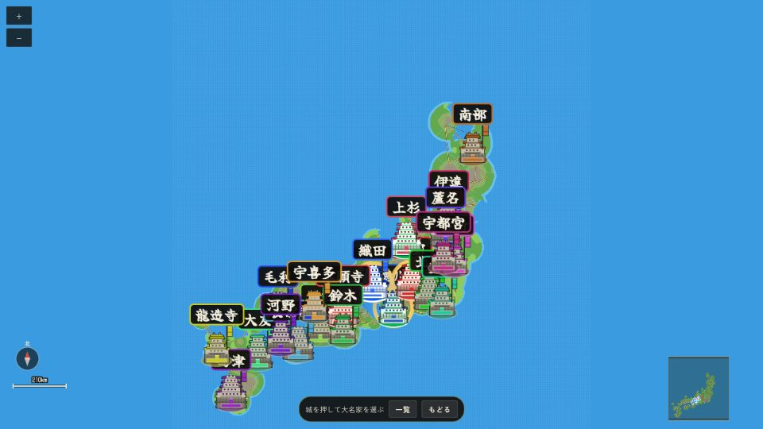
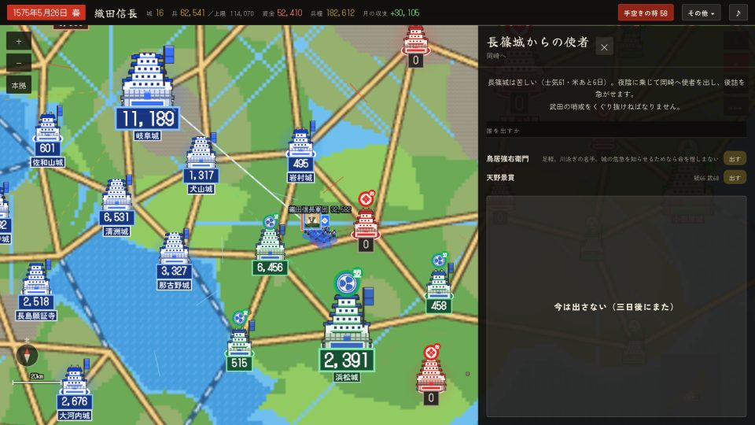

「戦国大名」とはどんなゲームか
「戦国大名」は、桶狭間から大坂の陣まで、戦国の世をリアルタイムで進めながら一つの家を率いる戦略ゲームです。日本全土の城を地図で眺め、内政で国を肥やし、軍勢を出して城を攻め、合戦になれば自分で隊を動かして戦います。インストール不要、ブラウザ一枚で動き、iPhone・iPad の Safari でも遊べます。

無料で遊べる筋書きは長篠の戦い（1575年〜）です。織田・徳川・武田をはじめ、この世のどの家でも選べます。長篠で始めた世はそのまま続き、天王寺砦・木津川口・手取川・荒木村重の離反・御館の乱・高天神・甲州征伐・本能寺の変……と、七年分の出来事が次々に起きます。他の筋書きは「天下布武」（アプリ内の解錠）で遊べるようになります。
この攻略サイトで分かること
- 画面の見方と、最初の30日で何をするか
- 内政（石高・商業・城・民心・兵糧）の考え方
- 軍勢の出し方、城攻めと後詰、合戦の操作
- 長篠の戦いそのもの（設楽原の備え・馬防柵・鳥居強右衛門・武田で勝つ方法）
- 長篠のあとに待っている出来事の年表と、勝つためのコツ
遊び方 ── 画面の見方



時間の流れ
時間は止めない限り流れます。右下の Ⅱ で止め、×1×2×3 で速さを変えます。迷ったら止めるのが基本です。止めている間も、城の札や評定は開けます。
城の札

- 石高：米の実り。年貢＝銭の元。新田開発で増える
- 商業：町の賑わい。商業投資で増え、銭になる
- 守兵：その城にいる将の兵の合計。攻められた時の守り
- 城Lv・耐久：城の堅さ。強化すると落ちにくい
- 民心：民の気持ち。低いと一揆や離反が起きる。「施し」で戻る
- 兵糧：兵の飯。尽きると軍勢が動けず、士気が落ちる
家紋で家を見分ける
この世の家はすべて家紋で表されます。地図の城の旗、軍勢の旗、合戦の背旗、どれも家紋です。自分の家の家紋は左上に出ています。
内政の札

外交

序盤攻略 ── 織田家で始める最初の30日
初めて遊ぶなら織田家がおすすめです。兵が多く、銭もあり、長篠の決戦では守る側（有利）だからです。

やることの順番
- まず止める。右下のⅡで止め、地図を眺めて自分の城の位置と敵（武田）の位置を確かめる
- 本拠の城の札を開き、兵糧と銭を見る。兵糧が半年分ないなら「施し」より先に米の手当て
- 内政は「自動」でよい。城の札の内政で「任せる」を選ぶと、新田開発・商業投資・城の強化を三つずつ回してくれる。序盤は全城これで十分
- 徴兵は控えめに。兵を増やすと兵糧が減る。決戦の兵は筋書きが用意してくれる
- 外交を確かめる。徳川は盟友（長篠では徳川が設楽原に来る）。上杉・本願寺・毛利とは戦になりやすいので、和睦や約定を使って戦線を増やさない
- 決戦の日を待つ。上の帯に「設楽原まで あと○日」。日が来たら「設楽原の備え」の軍議が開く
武田家で始めるなら
武田は攻める側で難しい家です。設楽原の柵を正面から攻めると負けます。「設楽原、攻め方を決める」の軍議で左翼（または右翼）に集めて一点を破るか、決戦を避けて長篠城を落とす道を選びます。騎馬は柵に当たると止まるので、足軽で柵を崩してから騎馬を入れるのが筋です。
内政の解説

| 命令 | 効き目 | いつ使う |
|---|---|---|
| 新田開発 | 石高が増える（年貢＝銭） | 余地が大きい城。序盤の基本 |
| 商業投資 | 商業が増える（毎月の銭） | 町の大きな城。港・街道沿い |
| 城の強化 | 城Lvと耐久が上がる。門・堀・櫓・石垣が付く | 敵と接する城、本拠 |
| 施し | 民心が上がる | 民心が40を切ったら。一揆の前に |
| 軍事訓練 | 兵質（足軽・侍・騎馬・鉄砲）が上がる | 決戦の前、銭に余裕がある時 |
| 徴兵 | 兵が増える（民心と人口が減る） | 兵糧に余裕がある時だけ |
軍事の解説
軍勢を出す

- 行き先は街道でつながった城だけ。戦でもない他家の城は通れません（盟を結ぶか、道中の城を先に）
- 城を攻めるなら守兵の二倍が目安。二倍に満たなければ機械は攻めません（人は攻められますが損が大きい）
- 敵の軍勢と道で行き合えば野戦、城に着けば囲み。囲みは日ごとに城の耐久を削り、耐久が尽きれば落城
- 囲まれた城には後詰（援軍）を送れます。囲む側の二倍で行けば囲みを打ち払えます

合戦の操作

- 隊を押して選び、升を押せば移動、敵を押せば討ちにゆく。指で引けば道筋どおりに進みます
- 隊は命じるまで動きません（待機）。騎馬は「突撃」で一気に駆けます
- 「全軍突撃」で一斉に、「全軍退却」で戦を終えて退きます（兵は少し減ります）
- 敵の本陣（総大将の隊）を崩すか、敵を残らず打ち払えば勝ち
- 高所は守りやすく鉄砲が遠くまで届く。川・浅瀬・湿地は足が鈍り、騎馬は駆けられません
- 雨が降ると火縄が湿り、鉄砲が効かなくなります
長篠の戦いの攻略

織田・徳川（守る側）

| 型 | 中身 | 向いている人 |
|---|---|---|
| 史実寄り | 三列の馬防柵、鉄砲を柵の内、酒井の別働隊が鳶ヶ巣を衝く | 初めての人。一番勝ちやすい |
| 攻撃的 | 柵は薄く、騎馬と侍で押し出す | 早く終わらせたい人 |
| 防御重視 | 柵を厚く、鉄砲で削る。持久 | 損を減らしたい人 |

- 柵の内から撃つ。鉄砲は柵越しに撃てます。柵の外に出さない
- 柵が破られたら、破れ目に侍か足軽を入れる。騎馬が入ってくる所は「突破口」の印が出ます
- 武田の宿将（山県・馬場・内藤）が崩れると武田全体の士気が落ちます。「重傷」の帯が出た隊を追い討ちすると討ち取れます
- 勝頼が退き始めたら深追いしない。追い討ちは騎馬と侍だけで

鳥居強右衛門（長篠城の使者）
長篠城で遊ぶと、囲まれた城から使者を岡崎へ走らせる一幕があります。哨戒の松明の向く先（扇）に入らないように、草むらと夜闇を選んで抜けます。抜ければ援軍の報せが城に届き、士気が保たれます。捕まれば城の士気が落ちます。
武田（攻める側）で勝つには
- 軍議「設楽原、攻め方を決める」で左翼か右翼に寄せる。柵の薄い所を選ぶ
- 足軽で柵を崩す（千五百の隊で柵一本に一分ほど）。崩れた所へ騎馬を入れる
- 鉄砲隊の前に騎馬を出さない。雨を待つと鉄砲が黙る（天候は運）
- 宿将を失わないこと。「手傷を負い退く」隊は下げる
- 勝てないと見たら退き陣。道は主要街道・山道・川沿い・遠回り。殿は三隊まで。勝頼を生かせば家は続きます
- 決戦を避けて長篠城を落とす道もあります（家中は揺れますが兵は残ります）

長篠のあとに待っている出来事（年表）
長篠の筋書きは一度きりの決戦では終わりません。世はそのまま続き、家によって違う出来事が起きます。主なものを年順に。

| 年 | 出来事 | 関わる家 |
|---|---|---|
| 1575 | 長篠の戦い／越前一向一揆の討伐 | 織田・徳川・武田 |
| 1576 | 安土の普請／第三次信長包囲網（義昭の御内書・毛利参戦）／天王寺砦の戦い（木津砦攻め→明智の砦を信長が救う）／第一次木津川口海戦 | 織田・本願寺・毛利 |
| 1577 | 紀州雑賀攻め／松永久秀の叛乱／手取川の戦い（七尾の報・斥候・撤退戦） | 織田・上杉 |
| 1578 | 荒木村重の離反と有岡城／九鬼の鉄甲船と第二次木津川口／耳川の戦い（九州）／御館の乱 | 織田・本願寺・毛利・大友・島津・上杉 |
| 1579〜81 | 甲相同盟の破れ／高天神城の攻防／新府築城／木曽義昌の前兆 | 武田・徳川・北条 |
| 1582 | 甲州征伐（高遠城・新府の評定・天目山）／本能寺の変（武田が滅んだ後、確率で） | 武田・織田・徳川 |
勝つコツ
同時に戦う相手は一つ。他家とは和睦・約定・盟で静かにしておく。攻めれば戦になります（攻撃＝宣戦）。
城攻めは守兵の二倍、後詰は囲む側の二倍。半端な兵は損をするだけです。
兵を増やす前に米を見る。軍勢は蔵から百二十日分を担いで出ます。
一揆は城を失う一番の原因。施しは安い保険です。
史実の決戦（長篠・天王寺・手取川・甲州）は勝つ側で遊ぶと楽。負ける側は「退き」を学ぶ場です。
敵を全部倒す必要はありません。敵の本陣（総大将）を崩せば勝ちです。騎馬を横から入れましょう。
守る時は高所と柵。鉄砲は柵の内、槍は前。騎馬は柵に当たると止まります。
従属した家は主家の戦にだけ付き合います。属国から盟の申し込みは来ません。
よくある質問
記録（セーブ）はどこに残る？
その端末のブラウザの中に残ります。別の端末には持ち出せません。iPhone なら「ホーム画面に追加」で遊ぶと消えにくくなります。
他の筋書き（桶狭間・本能寺・関ヶ原など）は？
「天下布武」で解錠すると遊べます。長篠の世をそのまま進めても、本能寺の変の後は山崎・清洲会議・賤ヶ岳・小牧長久手・四国・九州の出来事が、選んだ家によって起きます。
合戦で自分の隊が勝手に動く？
動きません。命じるまで待機です。「自動で戦う」を押した時だけ采配を任せます。
スマホで遊べる？
遊べます。横向きがおすすめです。二本指で地図を寄せ、指で引いて動かします。